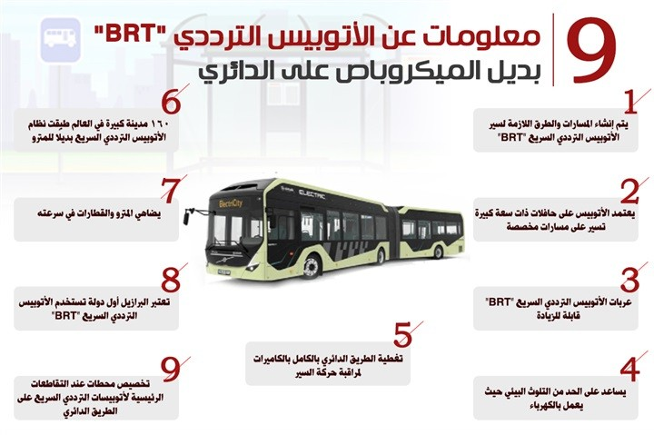

The importance of modern transportation:
Development in mass transportation represents a great cultural shift. Transportation means that it is fast, modern, safe and environmentally friendly, saves fuel consumption, and reduces pollution rates environment, reduce traffic jams on main axes and streets, and attract passengers to use them instead of Private cars.

First:
The monorail project, which connects the Greater Cairo Region with the new urban areas and cities To the east, "New Cairo, the Administrative Capital". The monorail contributes to facilitating the movement of employees and expatriates from Cairo and Giza to New Cairo And the administrative capital, and it meets the third line of the metro at the stadium station in Nasr City, and with the train The electrical station in the City of Arts in the new administrative capital.

Monorail project details:
Each monorail train consists of 4 cars, and it is planned to increase the number of cars to 8. The capacity of each of the two monorail lines is 600,000 passengers per day. It operates without a driver and has a design speed of 90 km/h, and a monorail time of 90 second. The train cars include extended walkways that allow passengers to move between the cars, and connected television cameras. With the train cabin for central monitoring of the railway, and LED screens to be used to provide passengers with information about flight, and can be used to broadcast commercials. Allocating places for wheelchairs for people with special needs, and maps above the passenger doors from the inside, The path is shown by illuminated lamps to assist the hearing impaired.

Length and launch date of the monorail project:
The Monorail project, in its first phase, extends from the stadium station in Nasr City, to the city station Justice in the Administrative Capital, 53 km long and includes 22 stations, the first phase will be opened in the first October 2022. The second phase of the project is scheduled to open in February of 2023 next year, and will reach Its length is 42 km, and it reaches 6th of October City.

Second:
The state, represented by the Public Authority for Roads and Bridges, is constantly striving for the comfort of the citizen Egyptian, and within the state's plan to expand and develop roads. And the government prepared to cancel the microbus on the ring road and replace it with buses frequency within the framework of the Ministry of Transport's plan to use an advanced and smart transportation system, and to establish a BRT network to be the longest in the world with a length of 106 km.

Frequency bus project details:
BRT bus frequency is a large rapid transit bus powered by electricity, providing a state of Safety, speed and comfort for the public of passengers from citizens, as well as it will help reduce road accidents, and development of government resources. Work is currently underway on the BRT bus lanes on the ring road, which is estimated to exceed 50 stations, starting from the Moshir Tantawy station until the assembly entrance station, and the BRT bus operates with electricity, And it works to provide a state of safety, speed and lateness to the public of passengers from the citizens, where the speed is high It has a maximum speed of about 70 km/h, and was produced locally by 60%. The BRT bus travels a distance of up to It can reach 350 km on a single charge, and it can work for 8 hours a day and includes 49 expandable seats.
Bus operating time:
It is expected that the BRT will be made available and operated to the passenger public, in The end of the current year 2022, to be an alternative to microbus cars on the ring road.